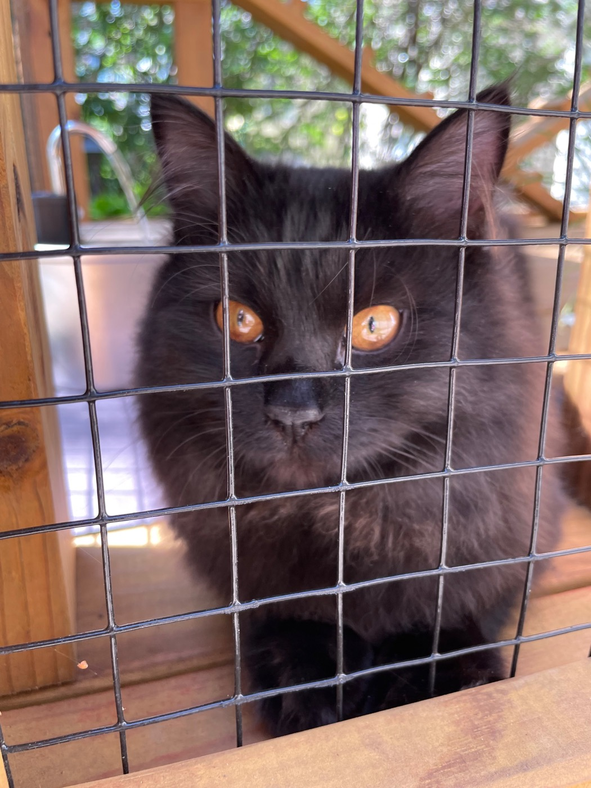
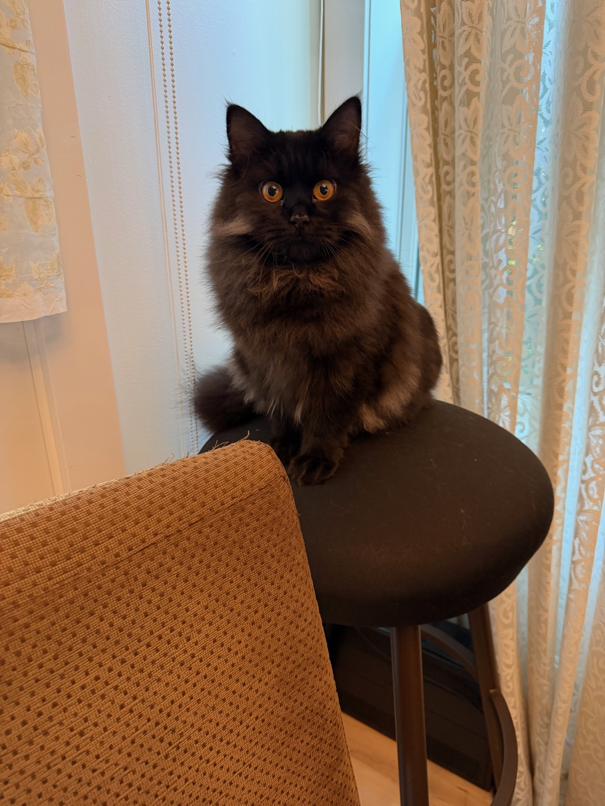
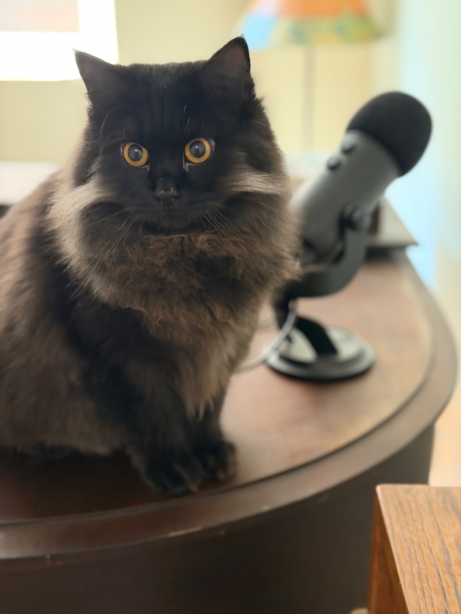

Three sittings, three different demands on the room's attention — asking, saying, and, once, doing both into a microphone that was not plugged in.
Asking for attention
Behind the catio's wire mesh, the request is not exactly subtle. Ears forward, eyes locked on the lens, the whole face turned toward whoever is on the other side of the wire — the look of a cat who has been waiting for this to be noticed for somewhat longer than she'd like to admit.

Something to say
On the stool by the curtains, the posture changes. Feet drawn in, tail settled neatly around them, spine straight — less a cat who happens to be sitting there and more a cat who has sat down on purpose, the way a person sits before they say something they've been rehearsing.

Being heard
The microphone in the background was, in fact, unplugged — the cable runs off the edge of the piano and connects to nothing, a detail the photograph does not try to hide. It hardly mattered. Whatever the equipment was or wasn't doing, the stare arrived at full volume anyway.

Asked, said, and heard, in that order — and, as far as the record shows, without anyone's help.